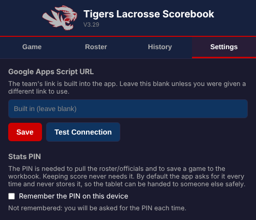
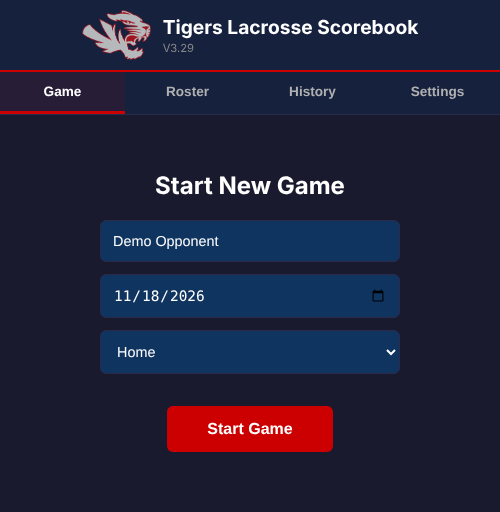
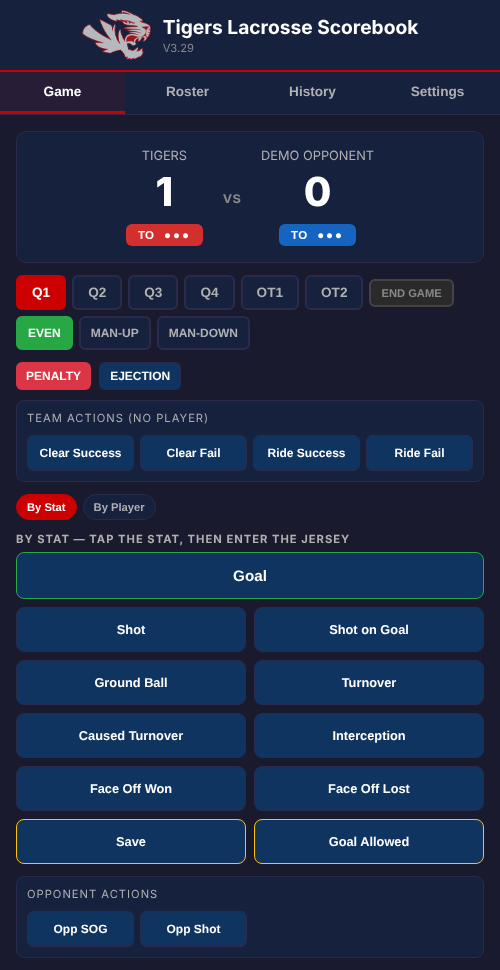
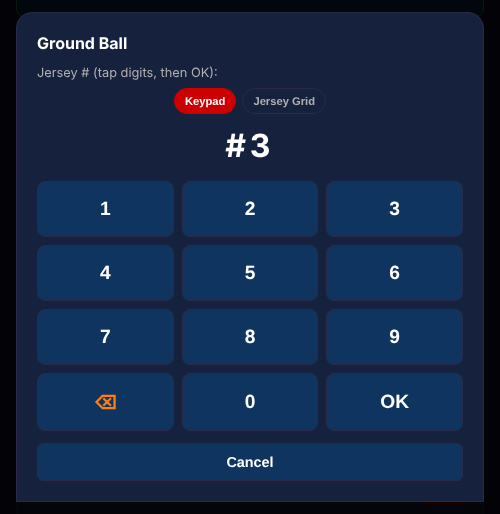
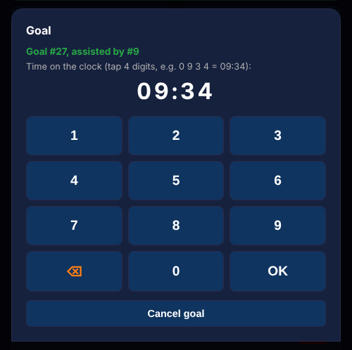
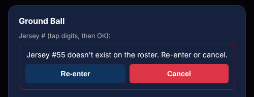
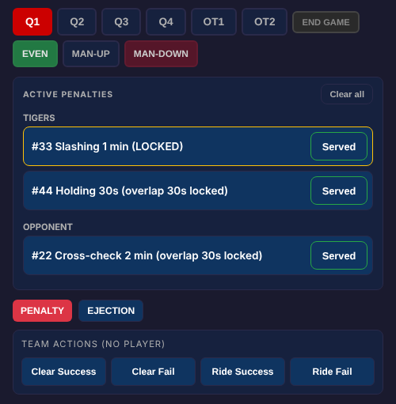
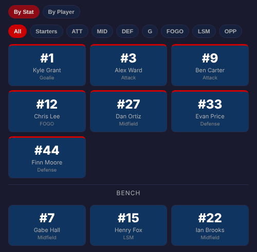
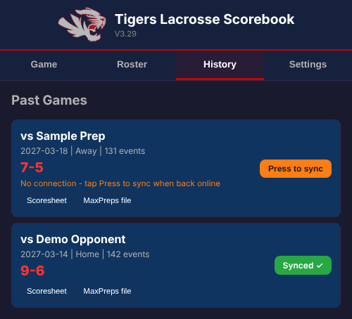

Scorekeeper Startup Guide • Setup time: about 5 minutes.
Welcome! This guide gets you set up to keep score. You only have to do the
one-time setup once on your device. After that, you'll just open the app and
start the game.
The Stats PIN (a short number I will send you — needed to load the roster
and to save a game). Keep it to yourself; don't write it on the tablet.
The app is already connected to our team's stats sheet. There's no link to paste.
Part 1 — One-time setup (do this once per device)
Step 1: Open the app
Open your web browser (Chrome, Safari, Edge — whatever you normally use).
Go to https://drewcollier.github.io/lax_scorebook/
You should see the scorebook with four buttons across the top:
Game, Roster, History, and Settings.
Tip — add it to your home screen (optional but handy):
iPhone/iPad: tap the Share button, then "Add to Home Screen."
Android: tap the menu (three dots), then "Add to Home screen."
This gives you a tap-to-open icon so you don't have to type the address again.
Step 2: Make sure the connection works
Tap the Settings button at the top.
Leave the Google Apps Script URL box blank — the team's link is built in.
Tap Test Connection. You should see "Connected! … Saves will be confirmed."
✅ If it says connected — you're good, go to Step 3.
❌ If it shows an error — check you have internet and try again. If it
still fails, contact me.

Settings: leave the link box blank, tap Test Connection
Step 3: Load the team roster
Tap the Roster button at the top.
Tap Pull Roster from Sheets and type the Stats PIN when asked. The
player list fills in automatically.
Tap Pull Officials from Sheets and type the PIN again (this loads the
referee/officials names you'll pick from before a game).
The app asks for the PIN every time and never stores it, so it's safe to hand
the tablet to someone else.
Roster: tap Pull Roster from Sheets
That's it — setup is done. You won't need to repeat this on this device.
Part 2 — Getting ready for a game
Do this shortly before game time.
Step 1: Open the app and check the roster
Open the app (tap your home-screen icon, or go to the web address).
Tap Roster and confirm the players are listed.
If the list looks empty or out of date, tap Pull Roster from Sheets
again to refresh it.
Step 2: Set up the game
Tap the Game button at the top.
Fill in the game details:
Opponent name
Date (it usually defaults to today)
Location (Home or Away)
Tap Start Game.
A short pop-up appears to capture game details (weather, officials, start
time, etc.). Fill in what you know and tap Start Game again to begin.
Anything you're unsure of can be left as-is.

Game tab before the game: enter the opponent, then Start Game
You're now ready to score the game. 🥍
Part 3 — Scoring the game
The app works the way stats are called out: Stat, Player, Time (only if needed).
For example: "Ground ball, number 3." Or: "Goal, number 27, assisted by number 9,
time 11:15."
On the Game tab, make sure By Stat is selected at the top of the screen.

Game tab with By Stat selected
Recording a stat
Tap the stat (for example Ground Ball).
Tap the jersey number on the keypad (one or two digits), then tap OK.

Ground Ball: key in #3, then OK
That's it. The stat shows up in the Event Log at the bottom of the screen.
Counts a shot too. Asks where the shot was taken from
Shot location is the least important detail. If you missed it, tap Skip.
Recording a goal
Enter it in the same order it is called out:
Tap Goal.
Enter the scorer's jersey number, tap OK.
Enter the assist jersey number and tap OK, or tap No Assist.
Enter the time on the clock as four digits (for example 0934 for 9:34), tap OK.
The time is required for every goal.
Tap the shot location, or tap Skip.
Step 3: the assist, or No Assist

Step 4: the time on the clockStep 5: the shot location, or Skip
The goal also counts as a shot and a shot on goal automatically. Do not enter those
separately. Nothing is saved until the last step, so if you tap Cancel before
then, no goal is recorded.
If the app says a jersey number doesn't exist
The message "Jersey # doesn't exist on the roster" means that number is not on
your roster. Tap Re-enter to try again, or Cancel. If the number is right,
the roster may be out of date. Pull it again (see Part 2).

A jersey number that is not on the roster
Penalties
Penalties work in the same order as everything else.
Tap PENALTY and pick the team (and the player for the Tigers).
Enter the time on the clock when the penalty was called (four digits, for
example 0845). Take care with this one. The app uses it to work out how
much of the penalty has been served.
Pick the penalty, then the duration.
For a personal foul, a Locked in box appears. Tick it when the penalty
is non-releasable, which means a goal will not release it. Technical fouls
can never be locked.
Every active penalty appears in the Active penalties box, under the quarter
buttons.

The Active penalties box with Served buttons
EVEN, MAN-UP and MAN-DOWN are indicators, not buttons. The app works them
out from the penalties in the box, so you never tap them. If both teams have a
penalty it shows EVEN (1 v 1). Two penalties against one team shows
MAN-DOWN (2).
When a penalty ends, tap Served next to it. The app does not run a clock, so
it relies on you for this. Clear all removes every penalty and asks you to
confirm first.
Penalties called at the same time against both teams show "overlap locked".
The shared time cannot be released by a goal.
What a goal does to penalties
After you enter the goal's time, the app compares it with when each penalty started.
Penalties on the team that was scored on are released, unless they are locked
or still inside their overlap time.
The team that scored keeps its own penalties.
If a penalty had already run out (you forgot to tap Served), a "Penalty already
expired" message appears. Tap OK. That goal is not counted as a man-up or
man-down goal, and the strength goes back to what is really left.
Undo on the goal puts back every penalty it released or cleared.
If you tap Cancel (leave blank) on the goal time, nothing is released.
Other options
Jersey Grid: if you would rather tap a player than type a number, tap
Jersey Grid at the top of the jersey screen. The app remembers your choice
on this device. Tap Keypad to switch back.
By Player: tap By Player at the top of the Game tab to see player cards.
Tap a player first, then the stat.
Ejections: use the EJECTION button, same as always.
Fixing a mistake: find the entry in the Event Log and tap Undo. Undo
removes everything that one tap recorded: undoing a goal also removes its Shot
and Shot on Goal (and any man-up success it counted), undoing a Goal Allowed
or Save also removes the opponent's shot rows, and undoing a penalty also takes
back any ejection it caused.
If the app reloads or the screen locks mid-game: just reopen it. The
quarter, timeouts, penalties, and ejections are all kept.
Jersey Grid: tap the player

By Player view: player cards
Part 4 — Saving the game (the PIN)
When you tap END GAME, the app asks for the Stats PIN to save the game to
the team sheet.
Know the PIN? Type it and tap OK.
Coach saves it instead? Tap Cancel. The game stays safely in History.
Hand the tablet to the coach, who opens History, taps Press to sync, and
types the PIN.
Why the PIN? It protects our official stats and the players' names. Loading
the roster/officials and saving a game need it; keeping score never does.
The app asks for it every time and does not store it.
Coach's own phone: in Settings → Stats PIN you can tick Remember the PIN
on this device so it's only asked once. Don't tick it on a shared tablet.
How you know it saved
When you tap END GAME, the app sends the game to the team sheet and waits
for Google to confirm. You'll see Saved "…" to the workbook ✓ and the game
shows Synced ✓ on the History screen.
No signal at the field? That's fine. The game stays on your device and the
History screen shows Press to sync ("No connection - tap Press to sync when
back online"). Once you have signal, tap Press to sync and enter the PIN. (On a device with Remember the PIN ticked, it sends
itself as soon as you're back online.)
Sending a game again is always safe: it replaces that game in the sheet, it
never adds it twice.
After the game: scoresheet and MaxPreps file
Open History. Each game has two buttons (no PIN or signal needed):

History: sync status, Scoresheet and MaxPreps file for each game
Scoresheet — the official one-page scoresheet. Tap Print / Save PDF:
print it, or pick Save as PDF as the printer to keep or email a copy.
Tap Close to go back.
MaxPreps file — downloads a spreadsheet (CSV) with that game's player stats
in exactly MaxPreps' column order, ready for the coach to enter on MaxPreps.
Goalie minutes and W/L/T are filled in when one goalie played the whole game;
if two goalies played, those boxes are left blank for the coach.
History keeps the last few games on the device. For the whole season, the
team sheet's MaxPreps Export tab has season-to-date totals in the same columns.
Quick troubleshooting
What you see
What to do
"No Apps Script link is set up"
Go to Settings, make sure the Google Apps Script URL box is blank, tap Save.
Roster is empty
Tap Roster → Pull Roster from Sheets.
Test Connection fails
Check your internet. Make sure the Google Apps Script URL box is blank (or holds the exact link you were given), tap Save, try again.
A blue bar says "A new version of the scorebook is ready"
Tap Reload when convenient (your game is saved). If you ignore it, the new version loads the next time you open the app.
App looks like an old version
Close the app completely and open it again (it updates in the background, so the second open has the newest version).
"Jersey # doesn't exist on the roster"
That number is not on the roster. Tap Re-enter, or pull the roster again if it is out of date.
EVEN / MAN-UP / MAN-DOWN won't respond when tapped
They are indicators. Add or remove penalties in the Active penalties box and they update on their own.
"Penalty already expired" message after a goal
A penalty had run out before the goal. Tap OK. Next time, tap Served when a penalty ends.
History says "No connection"
Once you have signal, tap Press to sync and enter the PIN.
History says "Wrong PIN - tap to try again"
Tap Press to sync and type the correct Stats PIN.
Test Connection says the script is "an older version"
Let me know — the team's Apps Script needs its update. Games still save, but can't be confirmed until then.
"Incorrect PIN" / "Wrong PIN"
Try again with the Stats PIN I sent you. If you're not sure of it, contact me.
"The PIN has not been set up in the Apps Script"
Contact me — this is a setting on my side.
"The team's Apps Script is out of date"
Contact me — the script needs its update.
Game-day checklist
App opens and shows the four tabs
Roster is loaded and current
Opponent, date, and location entered on the Game tab
By Stat is selected on the Game tab
Stats PIN known by whoever will save the game (you or the coach)